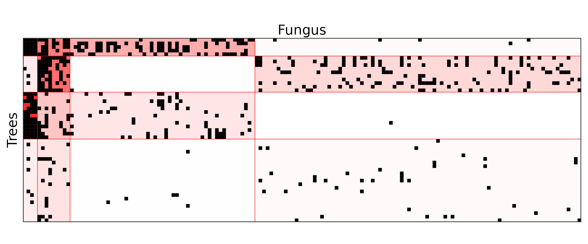

Introduction
This vignette illustrates the use of the {shinySbm} package which is
a shiny based graphical user interface (GUI) of the {sbm} package. These
packages are made to apply Stochastic Block Models on
network dataset. This dataset can be in two format: edges list and
connection matrix. First we will see how to use the shiny application in
the package. And in the second part we will see how to use the external
functions as plotSbm() and visSbm().
The shiny application: shinySbmApp()
shinySbmApp() function contain a {shiny} application which help to use and help to learn the basics of {sbm} package. Users can import their data inside it and apply Stochastic Block Models. They can transform network data from edges list to connection matrix. Once the SBM ran, users can explore the different number of groups selected by {sbm}. They can get models outputs as: table of parameters, plots, interactive network visuals, automatic reports (pdf or html) (French or English), R script to repeat the analysis outside of the app and tables of block attributions.
The following code show how to run shinySbmApp() from
your R console.
library(shinySbm)
shinySbmApp()When this is done your browser should load this page. From this page you can import your dataset by clicking on the Browse button in embedded in red.

When you load it, the install helper (1) can show advice to adjust the importation. For example here, we imported this set as an Adjacency or Incidence matrix but as we can see in (2), we imported an Edges list. So, we need to change the nature of imported data.

When there is no warnings any more, we can then press the button Matrix Builder, which will extract essential information from your dataset. If your used an edges list, an adjacency matrix will be built.

Once the matrix is correctly imported. You should go to the SBM application (1) page and then click on the Run SBM button (2). When the calculation are done you will see a small summary from the current model. The small module Block settings allows you by clicking on the graph (or numeric input) to select another block number and change the current model. You can also tune your SBM model from this page with the More Settings button.

Then it’s time to explore the visuals and outputs in the other pages.
External functions
The following codes are built by the shinySbmApp
application, page Report with the R
code option. The next chunk is only made of {sbm} package
functions.
# Loading Dataset
myNetworkMatrix <- fungusTreeNetwork$fungus_tree
# Fiting SBM
mySbmModel <- estimateBipartiteSBM(netMat = myNetworkMatrix, model = 'bernoulli',
estimOptions = list(plot = F, verbosity = 0))See this vignette to learn more of {sbm}
vignette("SBM_fungus_tree_network")The function plotSbm is a convenient function that can
take as arguments: matrices or objects produced by
estimateBipartiteSBM() and estimateSimpleSBM()
of {sbm}. It then plot them in a nice matrix of tiles, that can be
ordered by blocks or not, transposed etc…
plotSbm(
mySbmModel,
ordered = TRUE,
transpose = TRUE,
labels = c(row = 'Fungus', col = 'Trees'),
plotOptions = list(
showLegend = FALSE,
showPredictions = TRUE
))
The function visSbm is a convenient function that can
take as arguments objects produced by
estimateBipartiteSBM() and estimateSimpleSBM()
of {sbm} (it doesn’t take matrices). It make a {visNetwork} type object
that represent the network condensed by blocks.
visSbm(
x = mySbmModel,
labels = c(row = 'Fungus', col = 'Trees'),
directed = TRUE,
settings = list(
edge_threshold = 'default',
arrows = TRUE,
arrow_start = 'row'
))Thanks for your reading, if any question remain, contact us: shiny.sbm.dev@gmail.com
References
Package SBM
Chiquet J, Donnet S, Barbillon P (2023). sbm: Stochastic Blockmodels. R package version 0.4.5, https://CRAN.R-project.org/package=sbm.